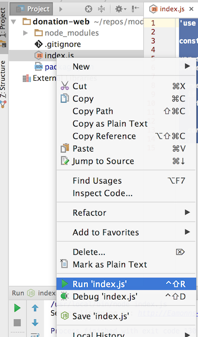
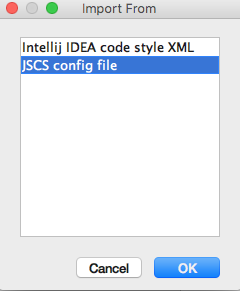
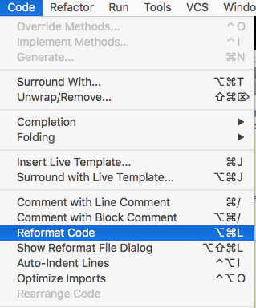
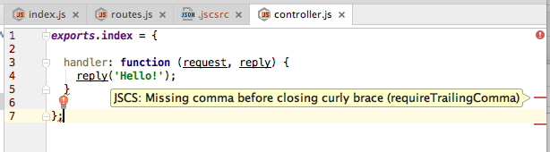

Objectives
Create a new simple node/HAPI project to serve a simple set of static views. Structure the project into controller, views, public assets and routes. The app offers no user interaction, apart from simple navigation.
Initial Empty Project
Make sure the latest version of node.js is installed on your workstation:
Open a command line shell in a suitable location, and enter the following commands:
mkdir donation-web
$ cd donation-web
$ npm initThe last command above: npm init - is a utility to create a new node module. Apart from a suitable description, you can accept the defaults for all properties:
This utility will walk you through creating a package.json file.
It only covers the most common items, and tries to guess sensible defaults.
See `npm help json` for definitive documentation on these fields
and exactly what they do.
Use `npm install <pkg> --save` afterwards to install a package and
save it as a dependency in the package.json file.
Press ^C at any time to quit.
name: (donation-web)
version: (1.0.0)
description: an application to host donations for candidates
entry point: (index.js)
test command:
git repository:
keywords:
author:
license: (ISC)
About to write to /Users/edeleastar/repos/modules/web-2/web-app-2016/prj/donation-web/package.json:
{
"name": "donation-web",
"version": "1.0.0",
"description": "an application to host donations for candidates",
"main": "index.js",
"scripts": {
"test": "echo \"Error: no test specified\" && exit 1"
},
"author": "",
"license": "ISC"
}
Is this ok? (yes) yesWhen completed, the utility will have generated the following file:
package.json
{
"name": "donation-web",
"version": "1.0.0",
"description": "an application to host donations for candidates",
"main": "index.js",
"scripts": {
"test": "echo \"Error: no test specified\" && exit 1"
},
"author": "",
"license": "ISC"
}If you are commiting the application to git, then you should create this .gitignore file:
.gitignore
.idea
node_modulesIf you are using webstorm, then opening the project it should look like this now:
Webstorm

First Simple HAPI Server
Using the same command line shell (inside the donation-web folder), enter the following command:
npm install hapi -saveWhen complete, npm will enumerate the module we have just installed:
donation-web@1.0.0 /Users/edeleastar/repos/modules/web-2/web-app-2016/prj/donation-web
└─┬ hapi@14.1.0
├── accept@2.1.2
├── ammo@2.0.2
├── boom@3.2.2
├── call@3.0.3
├── catbox@7.1.2
├── catbox-memory@2.0.3
├── cryptiles@3.0.2
├── heavy@4.0.2
├── hoek@4.0.2
├── iron@4.0.2
├── items@2.1.1
├─┬ joi@9.0.4
│ ├── isemail@2.2.1
│ └── moment@2.14.1
├── kilt@2.0.2
├─┬ mimos@3.0.3
│ └── mime-db@1.23.0
├── peekaboo@2.0.2
├── shot@3.1.1
├── statehood@4.0.3
├─┬ subtext@4.0.5
│ ├── content@3.0.2
│ ├─┬ pez@2.1.2
│ │ ├── b64@3.0.2
│ │ └─┬ nigel@2.0.2
│ │ └── vise@2.0.2
│ └── wreck@8.0.1
└── topo@2.0.2These modules will be visible in the node_modules folder.index.
Also, notice that the package.json file will be extended to include a new dependency:
...
"dependencies": {
"hapi": "^14.1.0"
}
...Create the following file in your project:
index.js
'use strict';
const Hapi = require('hapi');
var server = new Hapi.Server();
server.connection({ port: process.env.PORT || 4000 });
server.start(err => {
if (err) {
throw err;
}
console.log('Server listening at:', server.info.uri);
});In Webstorm, we should be able to run the application via the context menus:

The application is being served on port 4000 on localhost:

Your browser may not present the response as neatly as above. Here we are using Chrome + a plugin called JSONView.

Install this into your version of chrome now - and it will automatically present a tidier view of any JSON that happens to be returned from an app.
First Route + Controller
Create the following two file in the project:
controller.js
exports.index = {
handler: function (request, reply) {
reply('Hello!');
}
};routes.js
const Controller = require('./controller.js');
module.exports = [
{ method: 'GET', path: '/', config: Controller.index },
];The project will now look like this in Webstorm:

index.js
Now modify index.js to load the route:
server.route(require('./routes'));This is placed just before the server is started:
'use strict';
const Hapi = require('hapi');
var server = new Hapi.Server();
server.connection({ port: process.env.PORT || 4000 });
server.route(require('./routes'));
server.start(err => {
if (err) {
throw err;
}
console.log('Server listening at:', server.info.uri);
});Run the application again (restart it if already running) - and browse to:
You should see a simple greeting.
Java Code Standard: Airbnb
Before going any further, we are going to adopt a widely used Javsscript style:
This guide embodies sensible, widely used standards. We will incorporate them into our project, and convince Webstorm to enforce them (issuing warning if they are violated).
First, install the jscs module globally on your workstation (not in the project as such):
npm install -g jscs.jscsrc
Create a new file called .jscsrc in your project, and copy into it the airbnb.json preset from here:
Configuring Webstorm to read and enforce this style guide is a little involved.
First, select File->Default Settings->Code Style and press the 'Manage...' button:

Select JSCS as shown above, then press Import... button:

... selecting JSCS config file as shown.
Additionally, make sure your Code Style->JavaScript settings are as shown here:
We can reformat the code at any stage:

This will enforce Airbnb style indentation and layout - however, many of the style violations will need to be fixed manually. So for instance our two sources violate these two rules:
- requireTrailingComma
- requireLineFeedAtFileEnd
These will appear if you hover over the warnings:

Fix these, and your code should appear cleanly.
Occasionally, Webstorms inspections interfere with the JSCS formatting rules. If this happens, we can disable some of the conflicting inspections. Locate these settings and disable the inspections as shown:

Revised Project Structure + First Simple View (using inert)
We would like the application to render some simple HTML views. Out of the box, HAPI doesnt have a simple mechanism to do this, it is delegated to appropriate plugins to the framework.
We will use this plugin here:
We install it into our app be running this command (from within our project folder):
npm install inert -saveThis will download and install the module into our project. Check package.json to make sure it has been added:
package.json
{
"name": "donation-web",
"version": "1.0.0",
"description": "an application to host donations for candidates",
"main": "index.js",
"scripts": {
"test": "echo \"Error: no test specified\" && exit 1"
},
"author": "",
"license": "ISC",
"dependencies": {
"hapi": "^14.1.0",
"inert": "^4.0.1"
}
}We modify index.js to register the plugin - only proceeding to start the server if the plugin is successfully loaded:
index.js
'use strict';
const Hapi = require('hapi');
var server = new Hapi.Server();
server.connection({ port: process.env.PORT || 4000 });
server.register(require('inert'), err => {
if (err) {
throw err;
}
server.route(require('./routes'));
server.start((err) => {
if (err) {
throw err;
}
console.log('Server listening at:', server.info.uri);
});
});Delete the existing controller.js as we will replace it with a revised structure.
Create a new folder called app. Inside this, create two subfolders: controllers and views. Now create these two new files in this structure:
app/controllers/donations.js
'use strict';
exports.home = {
handler: (request, reply) => {
reply.file('./app/views/main.html');
},
};app/views/main.html
<!DOCTYPE html>
<html>
<head>
<title>Donations</title>
<meta charset="UTF-8">
<script type="text/javascript" src="//cdnjs.cloudflare.com/ajax/libs/jquery/2.1.1/jquery.min.js"></script>
<script type="text/javascript" src="//cdnjs.cloudflare.com/ajax/libs/semantic-ui/2.1.6/semantic.min.js"></script>
<link rel="stylesheet" media="screen" href="//cdnjs.cloudflare.com/ajax/libs/semantic-ui/2.1.6/semantic.min.css">
</head>
<body>
<section class="ui container">
<section class="ui stacked segment">
<div class="ui grid">
<aside class="six wide column">
<img src="images/homer.png" class="ui medium image">
</aside>
<article class="ten wide column">
<header class="ui header"> Help Me Run Springfield</header>
<p> Donate what you can now - No Bitcoins accepted! </p>
</article>
</div>
</section>
</section>
</body>
</html>Finaly, this existing routes file will need to be replaced with this version:
routes.js
const Donations = require('./app/controllers/donations');
module.exports = [
{ method: 'GET', path: '/', config: Donations.home },
];Your project should now be structured like this:

Rerun the project, and browse to:
You should see something like this:

Introduce and Serve Static Assets
Note that although we have a link to an image in our view:
<aside class="six wide column">
<img src="images/homer.png" class="ui medium image">
</aside>.. we are not serving any actual image:
We need to create a public folder in our project to store static assets like images.
Note we create public/images in the project as shown above.
Here are some assets to put into this folder:
favicon.png

homer.png
Now create a controller to serve these assets:
app/controllers/assets.js
'use strict';
exports.servePublicDirectory = {
directory: {
path: 'public',
},
};... and extend routes.js to serve all of the files in this folder if requested:
routes.js
const Donations = require('./app/controllers/donations');
const Assets = require('./app/controllers/assets');
module.exports = [
{ method: 'GET', path: '/', config: Donations.home },
{
method: 'GET',
path: '/{param*}',
config: { auth: false },
handler: Assets.servePublicDirectory,
},
];Run the app now - and an images should be rendered:

Exercise: Additional Routes + Static Views for Login and Signup
Archive of the project so far:
Exercises:
Below is how we would like the app to look:


And below are all of the views and assets you will need to implement the above. To implement these new views, you will need to:
- Introduce 2 additional routes like these:
{ method: 'GET', path: '/signup', config: Donations.signup },
{ method: 'GET', path: '/login', config: Donations.login },- Extend the donations controller with additional handlers:
exports.signup = {
handler: (request, reply) => {
reply.file('./app/views/signup.html');
},
};
exports.login = {
handler: (request, reply) => {
reply.file('./app/views/login.html');
},
};Try to implement the new routes, controllers and views now. These are the views + images you will need:
main.html
<!DOCTYPE html>
<html>
<head>
<title>Welcome to Donations</title>
<meta charset="UTF-8">
<script type="text/javascript" src="//cdnjs.cloudflare.com/ajax/libs/jquery/2.1.1/jquery.min.js"></script>
<script type="text/javascript" src="//cdnjs.cloudflare.com/ajax/libs/semantic-ui/2.1.6/semantic.min.js"></script>
<link rel="stylesheet" media="screen" href="//cdnjs.cloudflare.com/ajax/libs/semantic-ui/2.1.6/semantic.min.css">
<link rel="shortcut icon" type="image/png" href="images/favicon.png">
</head>
<body>
<section class="ui container">
<nav class="ui inverted menu">
<header class="header item"><a href="/"> Donation </a></header>
<div class="right menu">
<a class="item" href="/signup"> Signup</a>
<a class="item" href="/login"> Login</a>
</div>
</nav>
<section class="ui stacked segment">
<div class="ui grid">
<aside class="six wide column">
<img src="images/homer.png" class="ui medium image">
</aside>
<article class="ten wide column">
<header class="ui header"> Help Me Run Springfield</header>
<p> Donate what you can now - No Bitcoins accepted! </p>
</article>
</div>
</section>
</section>
</body>
</html>signup.html
<!DOCTYPE html>
<html>
<head>
<title>Sign up for Donations</title>
<meta charset="UTF-8">
<script type="text/javascript" src="//cdnjs.cloudflare.com/ajax/libs/jquery/2.1.1/jquery.min.js"></script>
<script type="text/javascript" src="//cdnjs.cloudflare.com/ajax/libs/semantic-ui/2.1.6/semantic.min.js"></script>
<link rel="stylesheet" media="screen" href="//cdnjs.cloudflare.com/ajax/libs/semantic-ui/2.1.6/semantic.min.css">
<link rel="stylesheet" media="screen" href="css/main.css">
<link rel="shortcut icon" type="image/png" href="images/favicon.png">
</head>
<body>
<section class="ui container">
<nav class="ui inverted menu">
<header class="header item"><a href="/"> Donation </a></header>
<div class="right menu">
<a class="item" href="/signup"> Signup</a>
<a class="item" href="/login"> Login</a>
</div>
</nav>
<section class="ui raised segment">
<div class="ui grid">
<div class="ui ten wide column">
<div class="ui stacked fluid form segment">
<form action="/register" method="POST">
<h3 class="ui header">Register</h3>
<div class="two fields">
<div class="field">
<label>First Name</label>
<input placeholder="First Name" type="text" name="firstName">
</div>
<div class="field">
<label>Last Name</label>
<input placeholder="Last Name" type="text" name="lastName">
</div>
</div>
<div class="field">
<label>Email</label>
<input placeholder="Email" type="text" name="email">
</div>
<div class="field">
<label>Password</label>
<input type="password" name="password">
</div>
<button class="ui blue submit button">Submit</button>
</form>
</div>
</div>
<aside class="ui five wide column">
<img src="images/homer3.png" class="ui medium image">
</aside>
</div>
</section>
</section>
</body>
</html>login.html
<!DOCTYPE html>
<html>
<head>
<title>Login to Donations</title>
<meta charset="UTF-8">
<script type="text/javascript" src="//cdnjs.cloudflare.com/ajax/libs/jquery/2.1.1/jquery.min.js"></script>
<script type="text/javascript" src="//cdnjs.cloudflare.com/ajax/libs/semantic-ui/2.1.6/semantic.min.js"></script>
<link rel="stylesheet" media="screen" href="//cdnjs.cloudflare.com/ajax/libs/semantic-ui/2.1.6/semantic.min.css">
<link rel="stylesheet" media="screen" href="css/main.css">
<link rel="shortcut icon" type="image/png" href="images/favicon.png">
</head>
<body>
<section class="ui container">
<nav class="ui inverted menu">
<header class="header item"><a href="/"> Donation </a></header>
<div class="right menu">
<a class="item" href="/signup"> Signup</a>
<a class="item" href="/login"> Login</a>
</div>
</nav>
<section class="ui raised segment">
<div class="ui grid">
<aside class="ui six wide column">
<img src="images/homer2.png" class="ui medium image">
</aside>
<div class="ui ten wide column fluid form">
<div class="ui stacked segment">
<form action="/login" method="POST">
<h3 class="ui header">Log-in</h3>
<div class="field">
<label>Email</label> <input placeholder="Email" type="text"
name="email">
</div>
<div class="field">
<label>Password</label> <input type="password" name="password">
</div>
<button class="ui blue submit button">Login</button>
</form>
</div>
</div>
</div>
</section>
</section>
</body>
</html>homer2.png
homer3.png
homer4.png

homer5.png